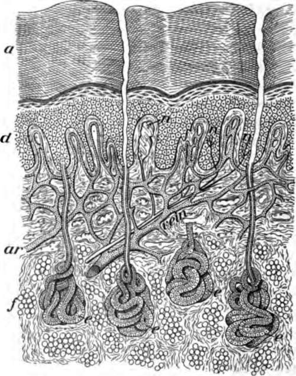
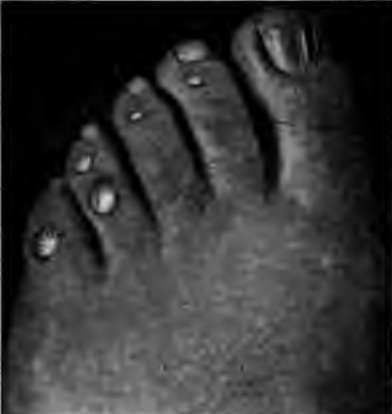
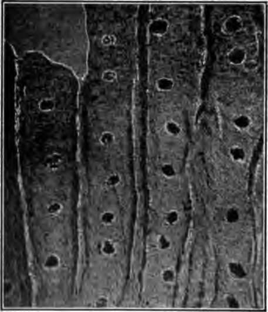

Chapter XII. Cleanliness And Warmth
Description
This section is from the book "The Human Body And Health", by Alvin Davison. Also available from Amazon: The Human Body and Health.
Chapter XII. Cleanliness And Warmth
Also collect from the blood and discharge from the body the waste flesh. This comes from the worn-out and dead parts of any organ, and would poison the body if it were not carried away daily.
Fig. 78. A thin slice through the skin, a, dead part and d, live part of the epidermis; ar, artery; e, sweat glands; n, nerve endings. Much enlarged.
The liver also removes some waste from the blood and discharges it as part of the useful bile into the intestine. The four chief organs, therefore, concerned in keeping the body clean within, are the lungs, liver, kidneys and skin.
The Skin
The skin is an elastic covering stretched over the muscles and fatty tissues. It is bound loosely to these by a threadlike network called connective tissue. The chief use of the skin is to support the sense organs of feeling, to regulate the temperature of the body and to protect the delicate parts lying beneath.
The skin is made of two layers, each of which has a different use. The layer on the surface is known as the epidermis or scarf skin, while the deep layer is called the dermis or true skin.
The Scarf Skin Or Epidermis
This portion of the skin contains no blood vessels, but in the deeper part are nerve endings for feeling. It is made of several layers of cells. The top ones are nearly flat, dry, dead and scaly, and are being constantly rubbed off. A frog or snake sheds the upper layer of its scarf skin in one piece three or four times a year.
The chief use of the scarf skin is to protect the underlying tender tissues and keep bacteria from entering the blood. In regions of the body where the skin is much in contact with hard objects, as on the palms of the hands and the soles of the feet, the scarf skin becomes very thick and hard.
Corns
Much pressure or friction on any part of the foot by a shoe is likely to produce a corn. This is a thickening of the epidermis in one spot, so that it presses on the tender true skin.
One should never wear tight shoes, or those with narrow toes not allowing the foot to keep its natural shape. A corn once formed is difficult to remove. The use of a corn ring such as may be purchased from the druggist, to prevent entirely the pressure of the shoe on the tender spot, is a great relief. The occasional shaving off of the top of the corn with a clean knife after the foot has been soaked a few minutes in hot water, is a helpful remedy.
Fig. 79. Corns on the two outer toes resulting from tight shoes.
Blisters And Warts
Blisters are caused by any irritation such as continued rubbing or pinching. They are formed by a pushing out of the upper layer of the epidermis with a collection of lymph which oozed from the blood capillaries. Removing the cause will permit a cure to take place in a few days.
Warts are overgrowths of the epidermis including an upgrowth of the true skin. Their cause is unknown. They are not produced by touching toads. Fortune tellers cannot remove them by saying words. They are easily removed by a physician.
Tanning And Freckles
Every one has some color in the skin. The red color is due to the blood in the vessels of the true skin, showing through the thin scarf skin. Any exercise or emotion causing the gorging of these vessels in the cheeks, produces blushing.
The brown hue of the skin results from a dark coloring matter known as pigment. This is present in many organs of the body. The pigment is conveyed into the deepest part of the scarf skin by the white blood corpuscles. Exposure to the sun causes these corpuscles to transfer an abundance of the pigment from the deeper tissues to the skin. When the corpuscles deposit the pigment in patches, freckles are formed. Some races, such as the African, have much more pigment in the skin than others. Sun baths are healthful.
The True Skin
This is thicker than the scarf skin and is of far more importance. It is richly supplied with nerves and blood vessels, and contains the sense organs of feeling, and the sweat glands. By means of all these structures, the true skin is able to help much in regulating the temperature of the body.
How The Body Heat Is Regulated
The temperature of the body is about ninety-eight degrees. It remains the same summer and winter when one is in health. The body will be just as warm in an ice house as in a hot room. This is due to the heat regulating machinery.
In the presence of cold, the vessels of the skin lessen in size so that less blood can come to the surface to be cooled and to furnish sweat. The cold feeling on the skin is carried by nerves to the inner part of the body which sends orders by other nerves to make the muscles in the walls of the blood tubes squeeze up tighter. In warm weather, the vessels of the skin enlarge and receive much blood so that it may be cooled by the air touching the skin. At the same time this extra supply of blood at the surface enables the sweat glands to throw out a large amount of sweat. The drying up of this sweat cools the body, because the heat passes off into the air with the sweat.
Fig. 80. Photograph of a tiny bit of the palm of the hand, showing the openings of the sweat glands.
The Sweat Glands
Each of the 2,500,000 sweat glands consists of a tube whose lower end is rolled up into a ball. The openings of the tubes on the surface of the body are the pores. These appear under a common magnifying glass as little pits on the ridges in the palms of the hands. The real gland is deep in the true skin and is surrounded by capillaries from which it gets the salty water and small amount of solid matter to make the sweat.
Continue to: